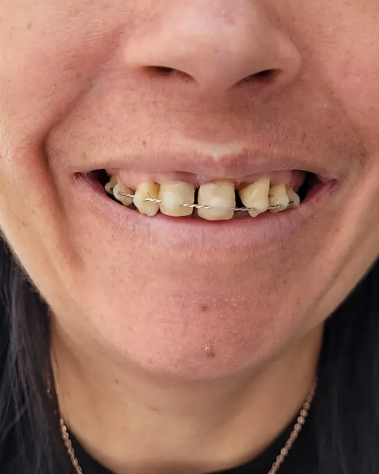
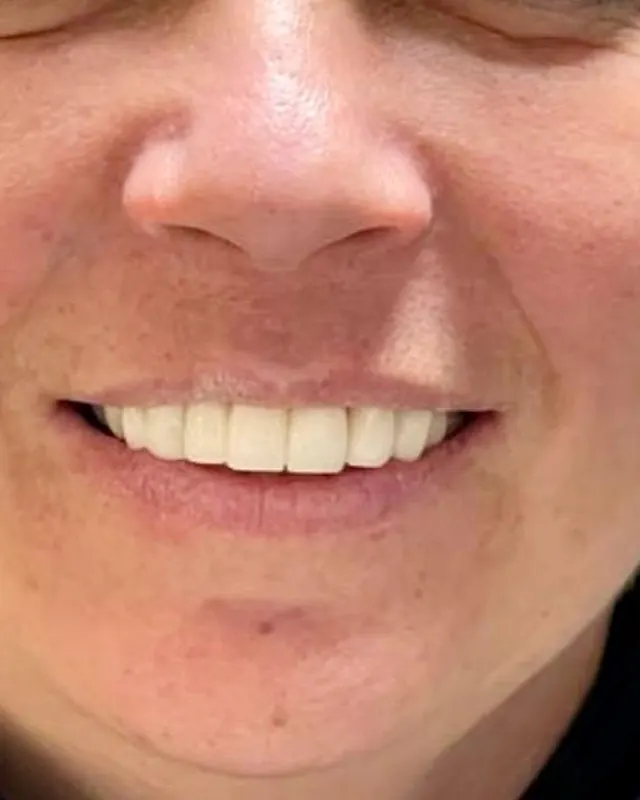
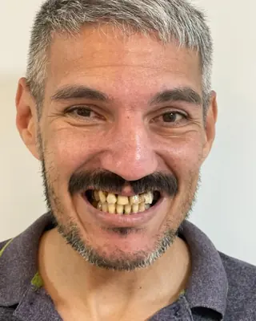
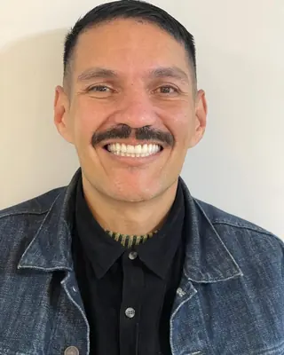
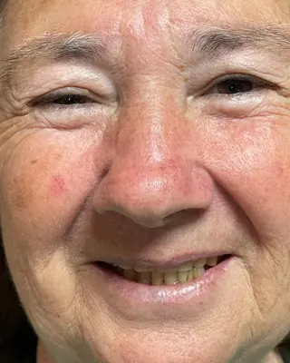
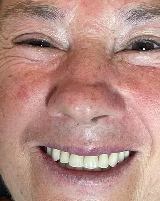
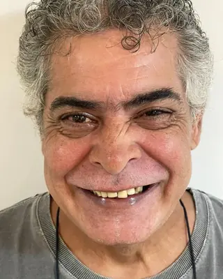
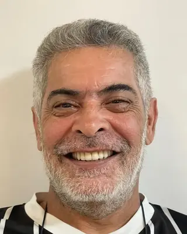
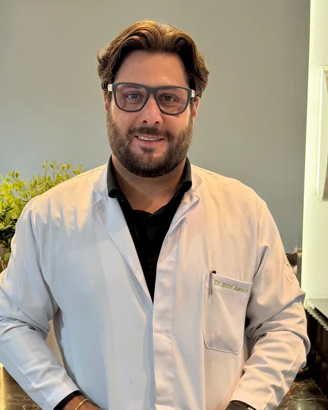

Studio do Dente, no Água Verde
Clareamento e facetas em Curitiba para sorrir com confiança

Antes
DepoisQuer chegar às festas de fim de ano com os dentes mais brancos? O Dr. Érico avalia o seu sorriso e indica o tratamento certo para você: clareamento, facetas ou lentes de contato.
Atendimento particular, com hora marcada.
- Mais de 15 anos de experiência
- Especialista em prótese dentária
- A maioria dos pacientes chega por indicação
Resultados de pacientes do Dr. Érico
Fotos reais, tiradas antes e depois do tratamento.
Arraste para o lado para ver mais casos.

Antes
Depois
Antes
Depois
Antes
DepoisCasos reais, publicados com autorização dos pacientes. Cada caso tem um planejamento próprio, e o resultado varia de pessoa para pessoa.
Qual é o seu caso?
Toque na opção mais parecida com a sua situação. A conversa no WhatsApp já começa com essa informação.
Clareamento, facetas ou lentes de contato?
Os três deixam o sorriso mais bonito, mas funcionam de jeitos diferentes.
Clareamento
Deixa os seus próprios dentes mais brancos, sem desgaste. É indicado quando o formato dos dentes já agrada e o incômodo é a cor.
Facetas
Lâminas finas coladas na frente dos dentes. Corrigem cor, formato, desgaste e pequenos espaços. Podem ser de resina ou de porcelana.
Lentes de contato
Um tipo de faceta de porcelana ainda mais fina, que costuma exigir pouco ou nenhum desgaste do dente.
Na avaliação, o Dr. Érico indica a opção certa para o seu caso. Às vezes, só o clareamento já resolve.
Quem vai cuidar de você

Dr. Érico Azevedo
Especialista em Implantodontia e em Prótese Dentária
Formado em Odontologia pela PUC-PR em 2010, o Dr. Érico é especialista em implantes e em prótese dentária. São mais de 15 anos de experiência devolvendo dentes com implantes e em tratamentos estéticos, como coroas, facetas e lentes de contato.
É sócio-proprietário da clínica Studio do Dente, no Água Verde, com tecnologia moderna e estrutura pensada para o conforto de cada paciente.
- Especialista em prótese dentária
- É a especialidade que cuida de coroas, facetas e lentes de contato, pensando na estética e na função do sorriso.
- Sorriso planejado com você
- Cor, formato e tamanho dos dentes são definidos junto com você, para combinar com o seu rosto.
- Tudo explicado antes de começar
- Você sai da avaliação sabendo o que precisa ser feito, quanto tempo leva e quanto vai investir.
- Molde digital
- O scanner registra os seus dentes em 3D, sem aquela massa desconfortável na boca.
Como funciona
Avaliação
O Dr. Érico examina o seu sorriso, ouve o que te incomoda e explica as opções.
Plano
Você recebe o plano com o tratamento indicado, o prazo e o investimento, e decide com calma.
Tratamento
No clareamento, as sessões seguem o método indicado na avaliação. Nas facetas e lentes, o scanner registra os seus dentes e as peças são feitas sob medida para o seu sorriso.
Perguntas frequentes
Clareamento estraga os dentes?
Feito com acompanhamento do dentista, o clareamento não estraga o esmalte. Pode haver sensibilidade passageira durante o tratamento, e o Dr. Érico orienta como aliviar.
Facetas e lentes desgastam o dente?
Depende do caso. As lentes de contato costumam exigir pouco ou nenhum desgaste. Nas facetas, o desgaste é planejado para ser o menor possível.
Quanto custa?
Depende do tratamento indicado e de quantos dentes entram no plano. Por isso o valor é apresentado na avaliação, junto com o plano completo.
Dá tempo de fazer até as festas de fim de ano?
Depende do tratamento escolhido e do seu caso. Na avaliação o Dr. Érico informa o prazo, para você planejar com calma.
Quanto tempo duram as facetas?
Com boa higiene e revisões periódicas, facetas e lentes de porcelana são um tratamento de longa duração. As de resina pedem mais manutenção.
Atende convênio?
Não. O atendimento é particular, com hora marcada.
Agende sua avaliação
Mande uma mensagem. A equipe do Dr. Érico combina com você o dia e o horário da avaliação.
Agendar avaliação pelo WhatsApp